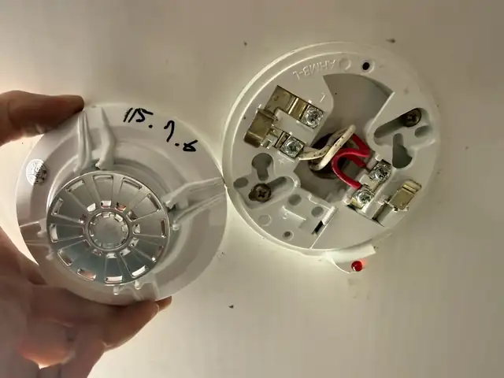

MASSAGE VENUE × FIRE REVIEW
按摩場所消防會審會勘
探測器外觀及配線確認
針對現場探測器設備進行外觀、底座端子與配線狀況確認，作為設備現況與後續案件處理的現場資料。
場所類型按摩場所
服務內容消防會審會勘
案件重點探測器・底座端子・配線

設備現況確認
現場拆卸探測器外殼，確認探測器底座、端子與配線狀況，並記錄實際設備配置，避免只從外觀判斷設備狀態。
本案另有相關消防圖說資料；網站公開版將待案件圖說分類確認後，再以去識別化方式補充展示。
實務重點
現場設備的型式、端子與配線狀況，是圖面檢討與現況比對時的重要資訊之一。